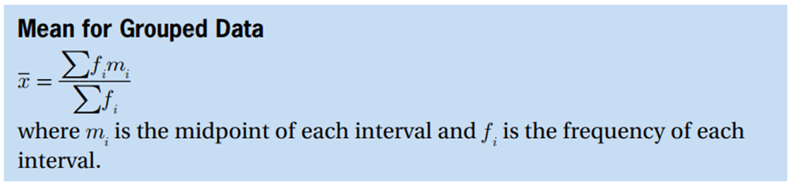
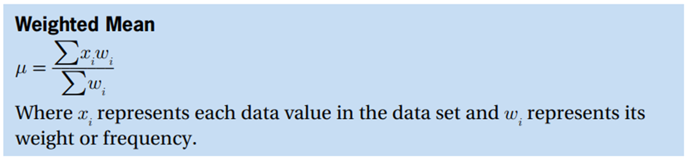
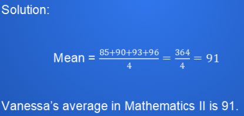
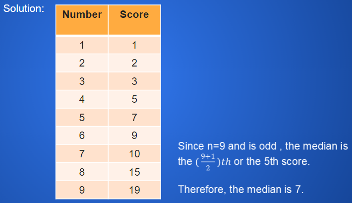
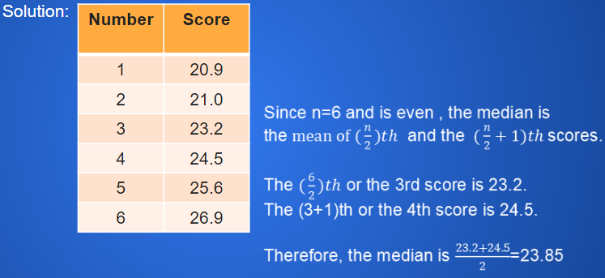

Measures of Central Tendency
Mean
the most popular and well-known measure of central tendency.
the sum of the data entries divided by the number of entries



Example
|
Find Vanessa’s average grades in Mathematics II. First Grading Period: 85
The following temperature readings were recorded in Manila, Philippines on one summer day. 6:00 A.M. 35.4 °C Find the mean temperature of these data.  |

Median
- the middle value of all the data points when the data values are listed in order from least to greatest
- if there is an even number of data points, then the median is the average between the two middle values
Example
|
Find the median of the following sets of scores. 5, 9, 3, 10, 15, 2, 7, 19, 1  Find the median of the set of measures. 23.2, 25.6, 20.9, 24.5, 26.9, 21.0  |
Mode
- the data value that occurs most often in the list of data points
- it is possible to have no mode, one mode, or more than one mode
Example
|
Give the mode for each set of scores. a. 9, 8, 5, 5, 3, 6, 5, 9, 5,1 b. 90, 92, 97, 90, 95, 97, 96 c. 51, 55, 48, 49, 56, 60, 63 Solution a) The mode is 5. b) The mode is 90 and 97. c) There is no mode. |